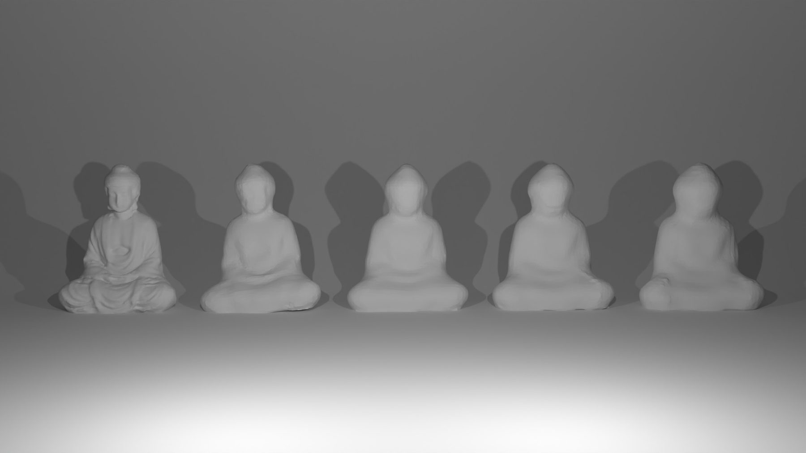
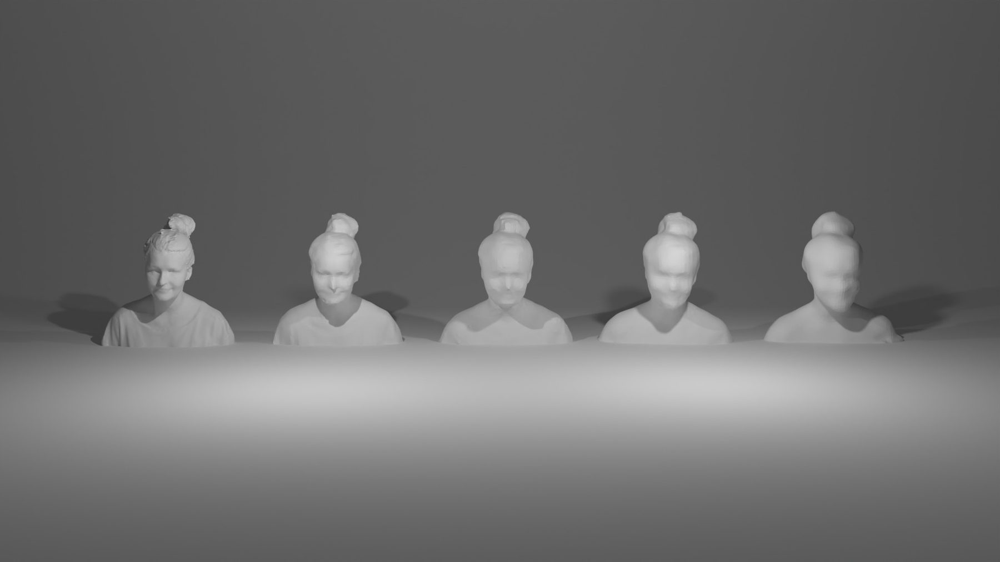
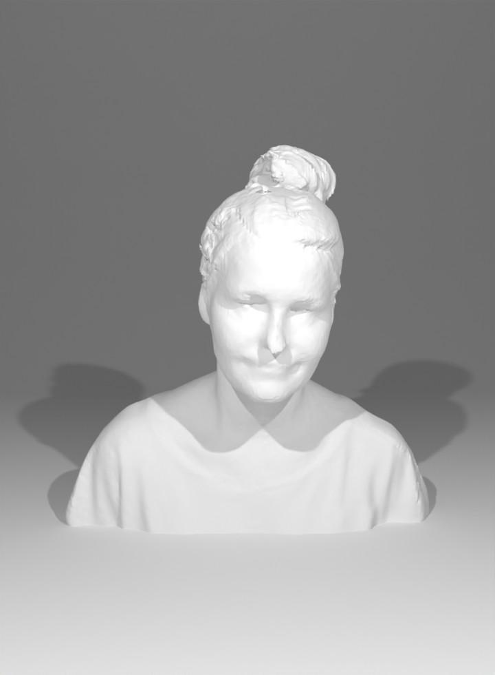
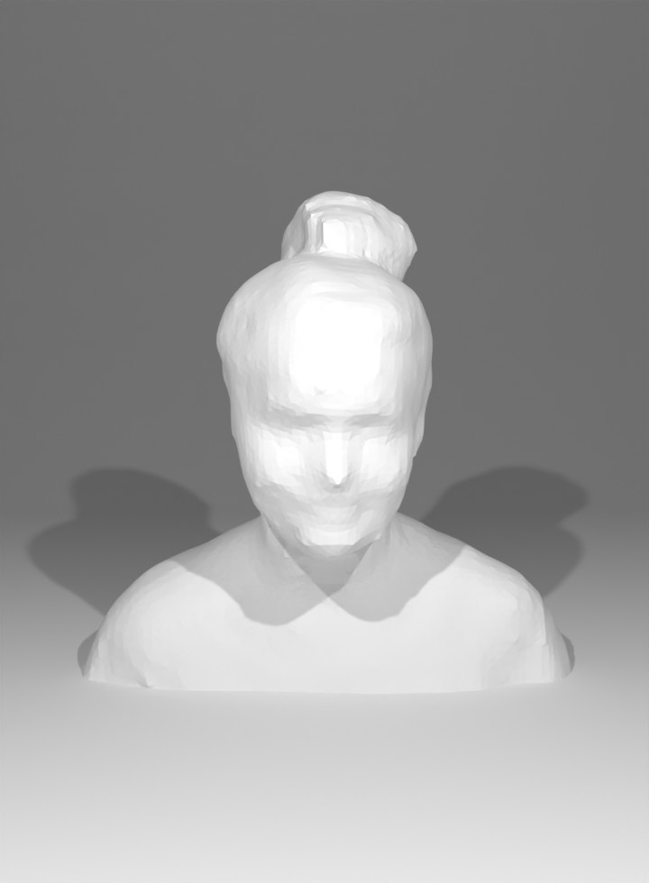
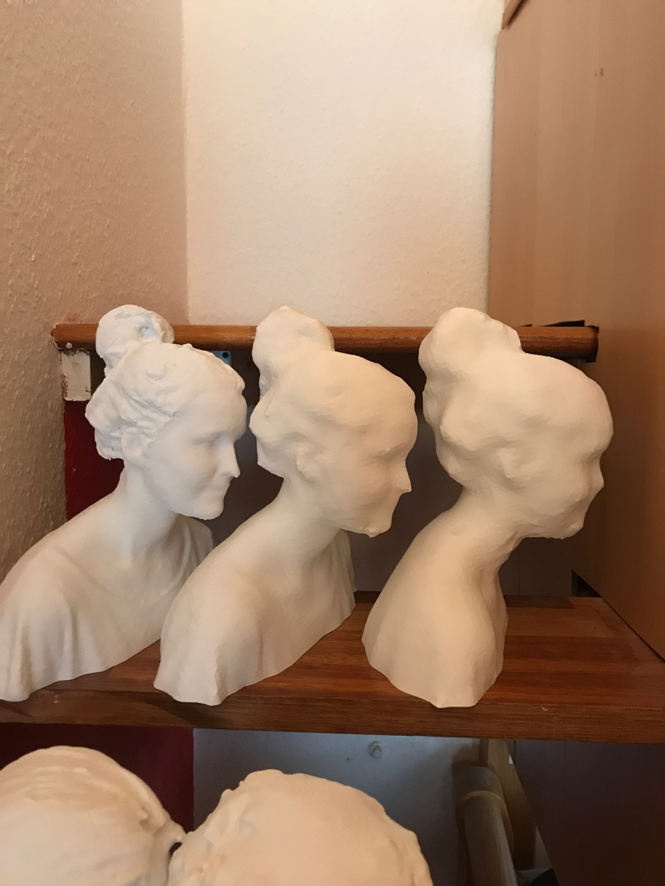
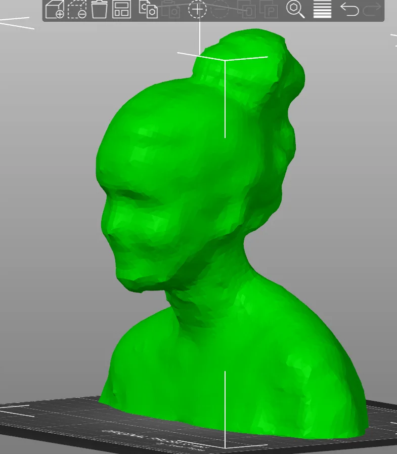

Weathered Buddha
Several times 3D Scanned and Printed Buddha
Weathered Buddha is extended project from Weathered Abdomen experimenting with subtle distortions and degradations that emerge when a physical object is scanned into a digital image, and conversely, when a digital image is printed back into the physical form.
To accelerate this weathering process, I photocopied my abdomen and repeatedly copied the resulting images a hundred times.
Through this cycle of translation between mediums, the original image undergoes erosion, transforming into noise and eventually dissolving into scattered abstract dots on the paper.

<Test version - Larrisa>




